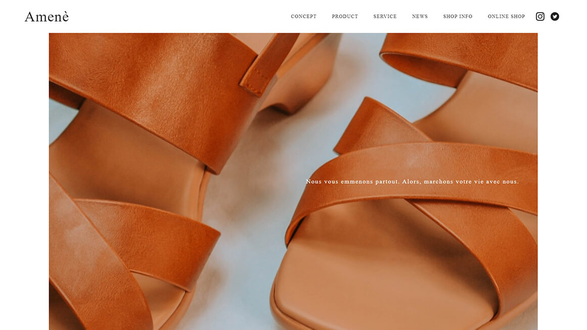

Amenè
制作期間：3日
使用言語： HTML, CSS
レスポンシブ： PCサイズのみ
ページ数： TOPページのみ
デザインの授業でルールを学び、ワイヤーフレーム、デザインカンプを作成してからコーディングをする、という流れで初めて制作しました。
見た目のデザインだけではなく、お店自体の設定や、ペルソナを想定してサイトを構成することが初めてだったため、すべての工程が大変でしたが、自分で起こしたカンプ通りに完璧にコーディングをするスキルを得ました。


デザイン授業の中で一番苦手だったのが写真選びでしたが、このサイトを
一から作ったことで苦手意識も改善できました。
また、サイトに合った写真を選んだ後も、見せ方に合わせて色調補正をしたり、リサイズするといった工程が必要なため、Photoshopの基本的な使い方も身に付けることができました。